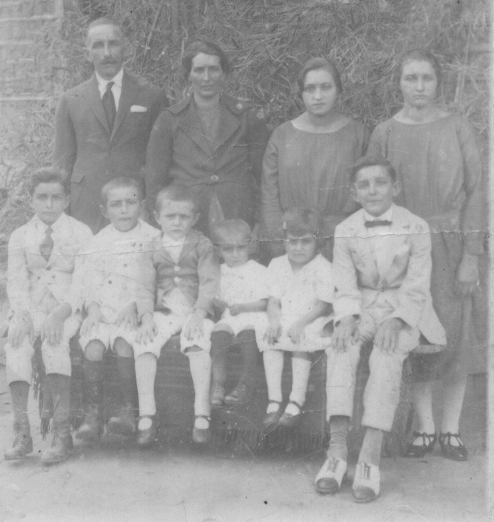

Maria Regina
Ver na árvore interativa ✏️ Sugerir correção ➕ Acrescentar filho(a) 📷 Enviar foto ou documento
Dados
- Cônjuge
- João Cipriano
- Última residência na Itália
- Ca' Emo
- Província de origem
- Rovigo
- Navio
- Adria
- Chegada ao Brasil
- 31/12/1888
- Idade na chegada
- 0
- Pai/Mãe
- Giovanni
- Eventual parentesco: Filha
Família
Irmãos (5)
- Jose ~1886⚭ Dosolina Dalfiôr · 9 filhos
- Angelo⚭ Carolina Jacomelli · 5 filhos
- Cesar⚭ Maria Zanette · 3 filhos
- Amalia⚭ Bortolo Partelli
- Francisco⚭ Tereza Jacomelli · 4 filhos
Fotos


Contexto histórico
Informações sobre lugares e fatos citados acima, pesquisadas em fontes públicas na web. Não são dados pessoais desta pessoa.
Contexto histórico A grande emigração do Vêneto (1875–1914)
Entre 1876 e 1900 mais de cinco milhões de italianos deixaram o país; o Brasil esteve entre os principais destinos. No Vêneto, a principal causa foi a crise agrária provocada pela chegada de trigo barato das Américas e da Rússia, somada à pressão demográfica e à crise da pequena propriedade. Cerca de 1,4 milhão de italianos vieram ao Brasil em 50 anos, a partir de 1874.
Chegada ao Brasil Imigração italiana no Espírito Santo
A imigração italiana para o Espírito Santo começou em 17/02/1874, com a chegada do veleiro La Sofia ao porto de Vitória, trazendo 388 italianos. Entre o fim do século XIX e o início do XX chegaram ao estado cerca de 45 mil italianos, quase todos camponeses, muitos partindo de Gênova. O Arquivo Público do Estado (APEES) mantém o banco de dados "Imigrantes Espírito Santo", com dezenas de milhares de nomes, onde é possível pesquisar as listas de passageiros e pedir certidão de desembarque — útil para a cidadania italiana.
Pasta de origem: 01Giacomo/02Giovanni/02Maria_Regina/